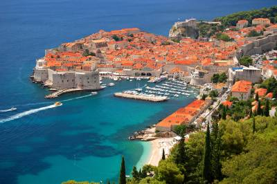
King's Landing: Dubrovnik, Croatia
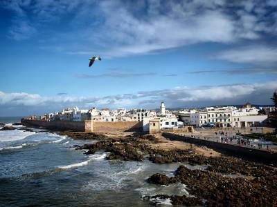
Astapor: Essaouira, Morocco
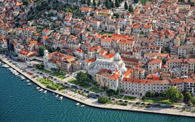
Braavos: Sibenik, Croatia
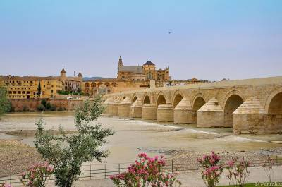
Long Bridge Of Volantis: The Roman Bridge, Cordoba, Spain
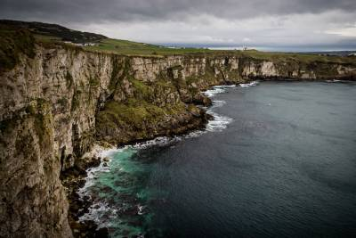
The Stormlands: Larrybane Quarry, Northern Ireland
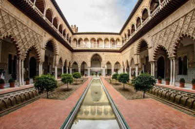
Royal Palace Of Dorne: Real Alcázar Palace, Seville, Spain
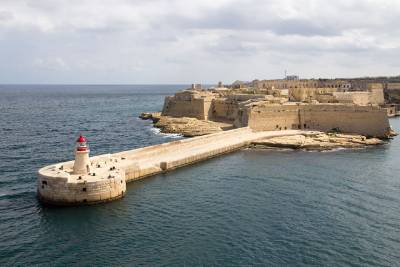
Red Keep: Fort Ricasoli, Malta
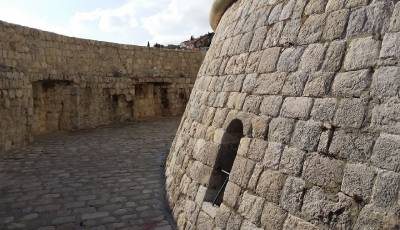
Entrance To The House Of The Undying | The Minceta Tower, Dubrovnik
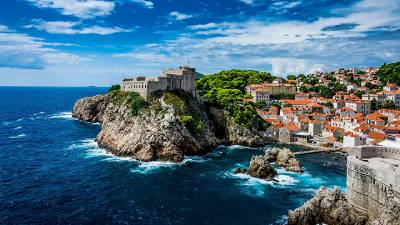
The Red Keep: Lovrijenac Castle, Castle
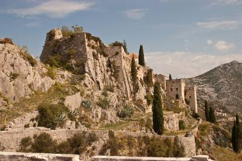
Meereen: Kliss Fortress, Croatia
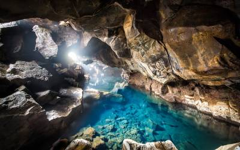
Thermal Spring Or "Jon And Ygritte's Love Nest": Grjótagjá Cave, Iceland
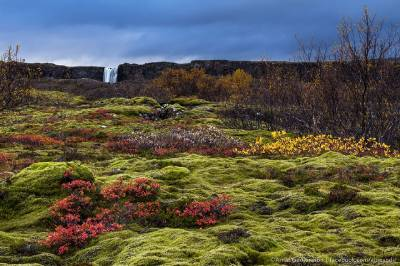
North Of Westeros: Thingvellir, Iceland
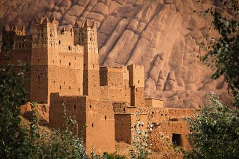
Pentos: Ouarzazate, Morocco
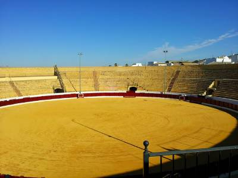
Danzak's Pit: Plaza De Toros De Osuna, Spain
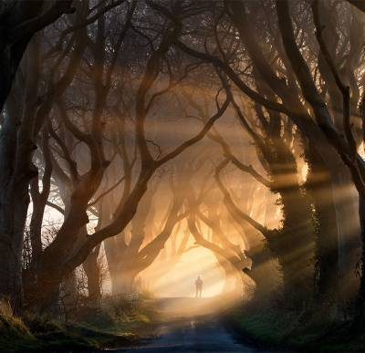
The Road From King's Landing: Dark Hedges, Northern Ireland
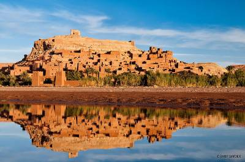
Yunkai And Pentos: Ait Benhaddou, Morocco